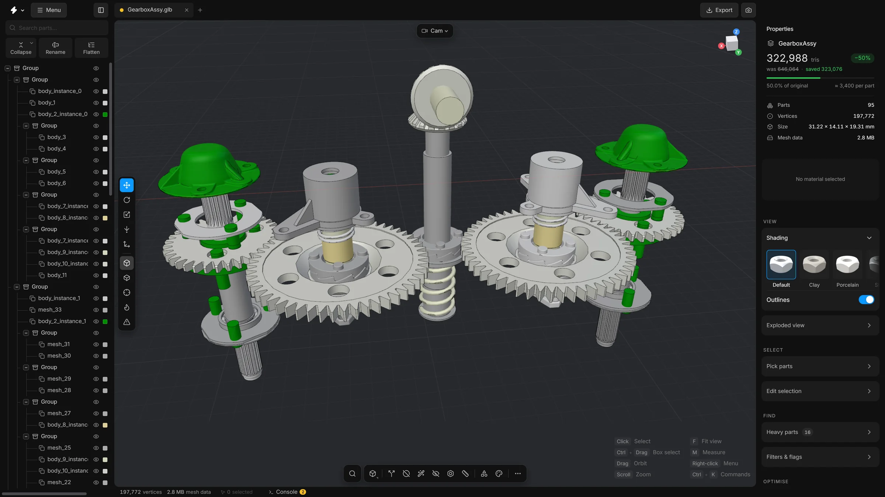
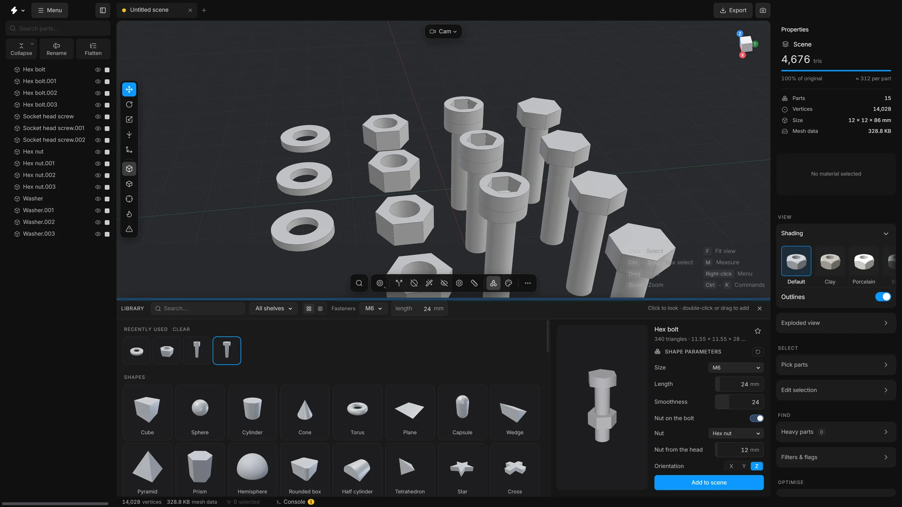
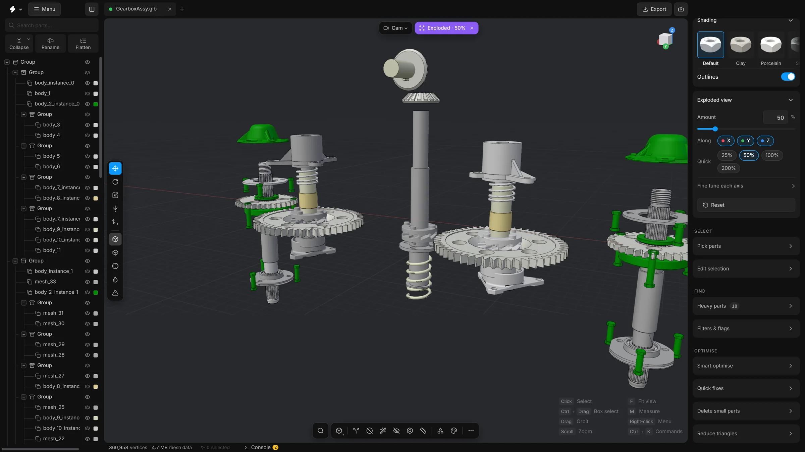

Features
Make heavy CAD models light. Free, private, on your own machine.







What it saves
Half the triangles, the same gearbox.
One press of Optimise on a real CAD assembly, read off the app’s own Properties card.
Result
−50% triangles 646,064 → 322,988Before and after
Triangles left, by level
MeshOptimiser v0.15.0, Gearbox Assy (95 parts, 646,064 triangles), Smart optimise on Balanced with Reduce triangles on. Strong ends at 161,980 triangles and 1.6 MB.
Mesh clean-up
The tools this app is for.
Bolt holes nobody will see. Screws sealed inside housings. Parts drawn twice. Found by shape, gone in one click, back with one undo.

- Remove floating piecesPlugs, shavings and stray dots, gone. The main body always stays.Read more about Remove floating pieces
- Remove hidden facesDeletes faces that never show: inside a housing, where two parts meet.
- RemeshFlat faces rebuilt with the fewest triangles. The shape doesn’t move.Read more about Remesh
- Delete small partsScrews and clips too small to see, gone. A slider and a preview show what goes.Read more about Delete small parts
- Repair meshDoubled points, empty triangles and flipped faces, fixed.Read more about Repair mesh
- Stacked copiesParts drawn twice in the same place, found and removed.Read more about Stacked copies
Smaller files
5 MB in. 1 MB out.
Same model, same shape, a fraction of the file. Send it, load it, share it.
Gearbox, Meshopt
−79% file size 4.95 MB → 1.03 MBThree sample models
Gearbox, file size
- Meshopt
- Small and quick to open. About a fifth of the size, built for the web.
- Draco
- The smallest file. About an eighth of the size, for when every kilobyte counts.
- Faster to draw
- Same file size, smoother on screen. Opens in any viewer.
Measured on the Khronos sample models (Gearbox, Reciprocating Saw, Two-Cylinder Engine) with glTF Transform 4.1: Meshopt at high, Draco at its defaults. 1 MB = 1,000,000 bytes. Very light meshes can come out larger with Draco.
Import
Open and convert
- Reads the whole assemblyColours, names and the whole part tree come through.
- Finds repeatsSame shape, any angle: stored once, drawn many times.
- Rebuilds the surfacesSet the detail in millimetres, or as a share of the model.
- You set the tessellationBig parts fine, screws light. You choose the detail by part size.
- Smooth from the CAD surfacesFillets blend, cylinders have no seam, sharp edges stay sharp.
- CompressesMeshopt turns your GLBs into a fraction of the size.
Make it light
Clean up and optimise
- Smart optimiseEvery clean-up in one press. One undo.
- FastenersEvery bolt, screw, nut and washer, found by shape.
- Select hidden partsThe parts nobody can see, found in one click.
- Remove hidden facesFaces that never show, gone: inside housings, where parts meet.
- Quick remesh (B)Slide down a column of levels and watch the part change.
- Fit to budgetName a triangle count. The heaviest meshes go first.
Make it right
Repair and tidy
- Remove holesBolt holes, slots and pockets closed, with no ring of points left behind.
- Remove floating piecesPlugs, shavings and stray dots, gone.
- Repair meshDoubled points, empty triangles, flipped faces: fixed.
- SplitOne fused lump, back to the solids it was.
- Stacked copiesParts drawn twice in the same place, removed. Only true copies go.
- Align to floorA model that arrived on its side, stood up, with a preview first.
Go inside
Edit mesh
- Points, edges, polygonsPick the pieces of a mesh, as in Cinema 4D. Keys 1 to 4 switch mode.
- Click, Box, BrushThree ways to pick. Double-click takes the whole loop.
- Move what you pickedMove, turn and scale pieces with the gizmo. One undo.
- DissolvePoints out, surface closed, no hole.
- Weld and FillJoin points. Close a hole from its rim.
- Planarize and StraightenFlat polygons. Straight lines of edges.
Big assemblies
Find and organise
- Built for big assembliesTen thousand rows, still smooth.
- Search and filtersFind parts by name, with the small ones tinted.
- Search (Shift + C)Commands, settings, parts, library: one box. Typos and initials still find it.
- Batch rename (F2)Templates, regex, live preview, presets.
- Select by ruleName, material, size, triangles: pick by rule, with a live count.
- Typo-proof part searchNewWords in any order, quotes, or, minus, >5000 triangles. A typo still finds it.
Make new parts
Build and arrange
- A Draw tool (L)Pen, rectangle, circle, arc, polygon, freehand: on any plane or on a part’s face.
- Align partsNewAlign or spread parts along X, Y and Z, with a gap if you want one. One undo.
- SweepCarry a profile along a path. Scale, twist, closed ends. The result is a normal part.
- A library of 112 partsBolts, nuts, pipe fittings, bearings, brackets, gears, a servo. Set the size, drag it in.
- Exploded viewOne slider pulls it apart, along the axes you choose.
- Dynamic place (D)Drag a part over a surface: it rests on it and turns to face it.
Send it on
Export and deliver
- GLB and glTFDraco or Meshopt compression. Textures embedded if you want.
- FBX, USDZ, OBJ, STL, PLYThe common 3D and AR formats, with mm, cm, m and inch presets.
- Check against where it’s goingTest the scene against web, Shopify, AR Quick Look or phone-app limits.
- Parts listA CSV bill of materials: every part and its size.
- Lighter, or just faster to drawMeshopt cuts a GLB to about a quarter. Or keep the size and draw faster.
Ask for it
Work with Claude
- Just askSay “find the bolts and hide them” or “get this under 5 MB”. Claude does it with the app’s 65 tools.
- You decideIt asks before it changes anything. Deleting always asks. Every change is one undo.
- Try it firstSixteen steps can be tried first: done, shown, taken back.
- One request, a whole jobUnder 5 MB, or ready for web, Shopify, AR or phone, with a before and after picture.
- A whole folderEvery model in a folder: opened, optimised, exported, closed. Stop it any time.
- Pictures for a clientClean renders up to 8192 px, several angles, a plain or transparent background, plus a turntable film.
The whole list
Every feature, by name.
Every capability of the app, grouped. The best of it is above.
All 181 features
Open and import
- STEP files
- IGES files
- BREP files
- GLB and glTF files
- FBX files
- OBJ files
- 3MF files
- STL files
- Stored conversions reused
- Copies found in other formats
CAD conversion
- Colours and hierarchy
- Geometry only mode
- Instance overrides
- Smooth shading from CAD surfaces
- Drop small parts on import
- Share identical shapes
- Background conversion jobs
- Tessellation control
- CAD data kept
Command-line converter
- step2glb command line
- Batch convert a folder
- Batch report as CSV
- Level-of-detail files
- Parallel mesh building
- Meshopt through gltfpack
- Simplify while converting
- Quality and size targets
Clean up and optimise
- Smart optimise
- Optimise recipes
- Fit to budget
- Remove holes
- Remove floating pieces
- Remove hidden faces
- Select hidden parts
- Fasteners finder
- Stacked copies
- Delete small parts
- Small by diagonal, side or volume
- Fix degenerate parts
- Deduplicate geometry
- Recompute smooth normals
- Repair mesh
- Optimisation report
- Merge parts
Reduce triangles
- Decimate
- Smart fit
- Remesh
- Quick remesh
Edit mesh
- Move picked pieces
- Extract polygons
- Reverse normals
- Quads and n-gons remembered
- Pick points, edges and polygons
- Planarize and straighten
- Weld and fill
- Edit mesh bar
- Live box pick
Selection and visibility
- Select similar
- Select by colour
- Select by name
- Select by rule
- Arrow to a selection out of view
Parts tree
- Highlight small parts
- Batch rename
- Flatten
- Lock a part
- Point to find
- Tidy the tree
- Part search language
Transform and place
- Exact position, rotation, size
- Dynamic place
- Align to floor
- Recentre on origin
- Bake gizmo transforms
- Snapping
- Align parts
- Transform several parts
View and camera
- Orbit around selection
- Exploded view
- Sun direction gizmo
- HDRI environments
Looks and shading
- Heatmap view
- Clay view
- CAD view
- Edge outlines
- Studio lighting
- Material looks
Materials
- Roughness, metalness, opacity
- Material presets
- Merge materials
- Drag a material onto the model
- Shift-drag to merge
- Share materials by colour
Draw and sweep
- Draw tool
- Edit a line
- Bezier, Cubic, B-spline, Linear
- Round or bevel corners
- Mirrored copy
- Sweep
- Lines in GLB and glTF
Library and build
- Library of 112 parts
- Parametric parts
- A bolt with its own nut
- Electronics shelf
- Brackets and connectors shelf
- Bake geo
Measure and inspect
- Measure two points
- Triangle share bar
- Rank by weight
Export
- USDZ export
- Parts list as CSV
- Draco compression
- Meshopt compression
- Merge into one mesh
- File name pills
- Check against a target
- Export size estimate
Scenes and history
- Scene tabs
- Separate undo per tab
- Save scene
- Non-destructive editing
Pictures and film
- Custom size to 16,384
- Turntable video
Search and commands
- Command search
- Typo-tolerant search
- Calculator in the search
- Quick wand
- Numbers you can drag
- Movable search
- Resizable search
Keyboard
- Picture of the keyboard
- Change any key
- Key profiles
Work with Claude
- Let Claude connect
- MCP over local HTTP
- 65 tools
- Four permission switches
- One undo per change
- Dry run
- Optimise to a target
- Before and after picture
- Folder batch optimise
- Clean renders to 8192 px
- Turntable by Claude
- Model health check
- Run saved recipes
- Search the app’s help
- Six playbooks
- Ready-made jobs
Updates and recovery
- Updates inside the app
- Go back one version
- Automatic rollback
- Recovery copies
- Safe mode
Under the hood
- WebGPU renderer
- WebGL2 fallback
- OpenCascade CAD kernel
- Assembly tree from XCAF
- Pose-independent instancing
- Adaptive tessellation
- meshoptimizer simplifier
- Background mesh workers
- BVH-accelerated picking
- GPU-drawn outlines
- Virtual scrolling tree
- Lower resolution while moving
- Auto quality
- Reads compressed GLBs
- Assimp in WebAssembly
- glTF Transform on demand
- Visibility from many directions
- Fastener recognition by shape
- Hole versus boss detection
- Coplanar face joining
- Regression self-tests
- Open source, MIT
Privacy and offline
- Runs on your computer
- Nothing uploaded
- No account
- Works offline
- Original file never changed
Run it on your own machine.
Free and open source, MIT. Windows and macOS. Your files never leave the computer.